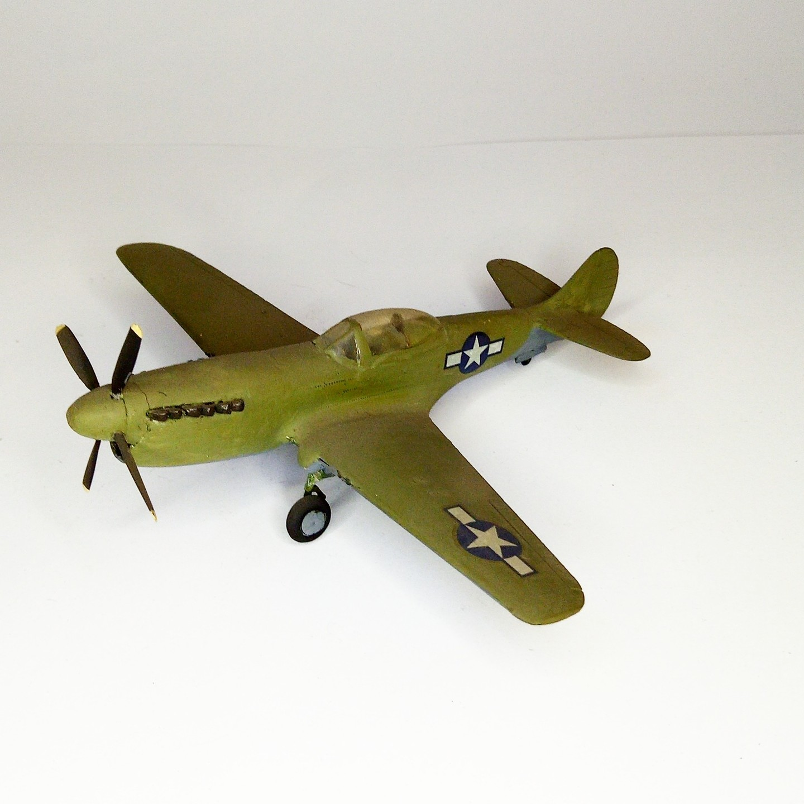

Aerei · scale model archive
Curtiss P40q
Curtiss P40q — Kit: conversion from Revell. Scake: 1/72 Last evolution of the P40 #1/72 #conversion

Photo gallery
English description
Scake: 1/72
Last evolution of the P40
#1/72 #conversion
Descrizione italiana
Ultima evoluzione del P40.